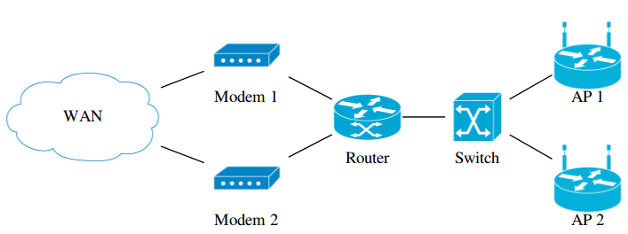

使用 Graphviz 繪製網路拓樸
自從離開了 Android 產業之後，我加入了一間與網路服務相關的新創公司。 在工作內容上，經常會需要理解對方的網路環境，而解決這個問題最好的方法， 就是事先準備好一份網路拓樸並歸檔。
Requirements
因此，接下來的任務就是尋找一個適合我們的 Diagram Editor，以下是我們的需求：
- 跨平台：公司內三種作業系統都有人使用，需要選擇一個各種平台上都能使用的檔案 格式，開放格式尤佳。
- 簡單：單就繪圖操作的部份，希望是連非技術人員也能夠使用。
- 容易修改：當網路架構有些微變動時，希望能夠很容易的完成修改，不需要大量的微 調各節點的位置。
- 版本控制：不管是使用什麼格式，版本控制都是必要的，但 binary 檔案管理起來總 是比較麻煩。
其實不難看出來，會列出這種需求，我根本就只是想內定 Graphviz 嘛！確實如此， 但在 簡單 這個項目上，Graphviz 卻似乎是最差的選擇，不把這個問題處理好，我看 大概很難順利將 Graphviz 導入公司。
我們暫且先不論 Graphviz 是否足夠簡單，還是先把環境準備好，實際畫張圖來看看。
Installation
其實在我進行 survey 內定之前，就已經先透過 Google 找了一遍，出乎意料
的只找到了一篇：Network topology with graphviz。
不過有總比沒有好，試著依樣畫葫蘆跑一遍，結果卻是 dot 執行時出現錯誤。查了才知
道，原來 Graphviz 到了版本 2.29 之後 node 才開始支援 image 屬性。但我所使用
的 Ubuntu 12.04 的套件庫中的版本只到 2.26，且一直到 14.04 才開始使用更新的版本。
這種類似的事情遇多了，最簡單的方法就是找個現成的 PPA，通常我會從官方維護的開始
找起，於是：
sudo apt-add-repository ppa:gviz-adm/graphviz-dev
接著要安裝時，apt 卻又出現錯誤：
graphviz : Depends: libgraphviz4 (>= 2.18) but it is not going to be installed
好在 Ask Ubuntu 上早有解答，照著做即可：
sudo apt-get update sudo apt-get remove libcdt4 libpathplan4 sudo apt-get install graphviz
Images
裝好新版本的 Graphviz 後，還需要用來表示各種節點的圖片，這裡我所選擇的是 Cisco 免費提供的 icons。
Cisco 提供的圖片格式是 JPEG，而根據 Graphviz 的文件，應該是有支援 JPEG，
但不知道是哪裡出了問題，我並沒有辦法順利使用，所以我是自行轉成 PNG。
Results
最後的結果就是下圖：

而上圖對應的 dot 原始檔如下：
graph G {
node [shape=none, height=1.2]
rankdir=LR
// Modems
node [labelloc="b", image="icons/modem.png"] {
"Modem 1"
"Modem 2"
}
// Routers
node [labelloc="b", image="icons/atm router.png"] {
"Router"
}
// Switches
node [labelloc="b", image="icons/atm switch.png"] {
"Switch"
}
// Access Points
node [labelloc="b", image="icons/wireless router.png"] {
"AP 1"
"AP 2"
}
// Sub-networks
node [labelloc="c", image="icons/cloud.png"] {
"WAN"
}
// Relationships
"WAN" -- {"Modem 1", "Modem 2"} {
{"Modem 1", "Modem 2"} -- "Router" {
"Router" -- "Switch" {
"Switch" -- {"AP 1", "AP 2"}
}
}
}
}
如果是曾經接觸過 dot 的讀者，或許會覺得我所使用的語法很怪異，因為原始碼中的
那些大括號與縮排，在 dot 語言中其實是完全沒有作用的，我這樣寫的目的，純粹是
想降低使用 Graphviz 繪製網路拓樸的學習難度。以下是我的一些考量：
- 將 宣告 與 建立關聯 的部份完全區分開，規定關聯一定要寫在最後面。
- 將節點宣告的概念，由原先的 修改後續 node 的 default attributes， 變成簡單的 集合中的元素。
- 由於我們所需要繪製的網路圖只會是樹狀結構，使用縮排可以更方便閱讀。
Conclusion
我們實際的使用方式是將網路拓樸紀錄在 Redmine 的 wiki 內， 而這裡有一個 plugin，能夠直接將 wiki 中的純文字的 dot，在預覽和儲存後直接以 轉換後的圖片顯示，實在是方常方便。
然而使用 Graphviz 有其極限，對於複雜的網路拓樸，或著對美觀極度要求時，使用其他 的軟體搭配仍然有其必要。